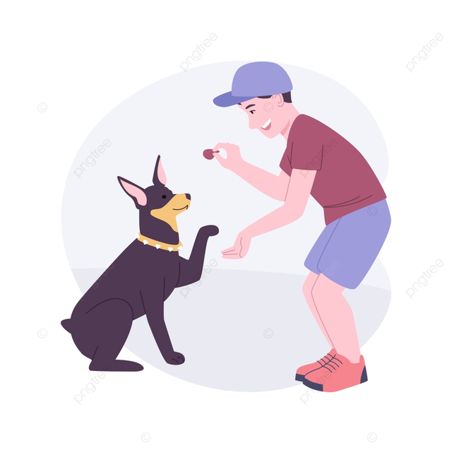

<mat-grid-list cols="3" rowHeight="237px">
  <mat-grid-tile *ngFor="let tile of tiles"
    [colspan]="tile.cols"
    [rowspan]="tile.rows"
    [style.background]="tile.color">
    <div class="One" *ngIf="tile.text==='One'">
      <mat-card>
        <mat-card-header>
          <mat-card-title-group>
            <mat-card-title><h1>Andres Gutierrez Palomino</h1></mat-card-title>
            <mat-card-subtitle>
              Servicios realizados: 70
              <br>
              Pueblo Libre, Lima
            </mat-card-subtitle>
            <div>
              <h3>Valoraciones</h3>
              <mat-icon>star</mat-icon>
              <mat-icon>star</mat-icon>
              <mat-icon>star</mat-icon>
              <mat-icon>star_half</mat-icon>
              <mat-icon>star_border</mat-icon>
            </div>
            
            <div>
              <h1>Servicios:</h1>
              
              
            </div>

          </mat-card-title-group>
        </mat-card-header>
        <mat-card-content>
          <h2>Sobre Andres</h2>
          <p>Mi nombre es Andrés y soy un apasiado por los animales. Mi mayor virtud es
          conocer a tu mascota y poder comunicarme con ella de manera excepcional. Amo a todo tipo de
          animales y todos me consideran sus amigos</p>
          <a>Continuar leyendo</a>
        </mat-card-content>
        <mat-card-content>
          <br>
          <ul>
            <li><mat-icon> local_hospital</mat-icon> Cuidado médico</li>
            <br>
            <li><mat-icon> directions_run</mat-icon>Estado físico funcional</li>
            <br>
            <li><mat-icon>timer</mat-icon>Puntualidad al máximo</li>
          </ul>

        </mat-card-content>

      </mat-card>
    </div>

    <div class="Two" *ngIf="tile.text==='Two'">
      <mat-card class="tarifas">
        <mat-card-title>Tarifas</mat-card-title>
        <mat-card-content>
          <p >Adiestramiento: 20 soles</p>
          <p >Paseador: 10 soles</p>
          <a>Reservar</a>

        </mat-card-content>
      </mat-card>
      <mat-card class="datepicker">
        <mat-card-title>Disponibilidad</mat-card-title>
        <mat-card-content>
          <mat-form-field class="example-full-width" appearance="fill">
            <mat-label>Choose a date</mat-label>
            <input matInput [matDatepicker]="picker">
            <mat-hint>MM/DD/YYYY</mat-hint>
            <mat-datepicker-toggle matIconSuffix [for]="picker">
              <mat-icon matDatepickerToggleIcon>keyboard_arrow_down</mat-icon>
            </mat-datepicker-toggle>
            <mat-datepicker #picker></mat-datepicker>
          </mat-form-field>

        </mat-card-content>
      </mat-card>
    </div>

    <div class="Three" *ngIf="tile.text==='Three'">
      <mat-card>
        <mat-card-title>Valoraciones</mat-card-title>
        <mat-card-content>
          <mat-card>
            
            <div>
              <br>
              <mat-icon>star</mat-icon>
              <mat-icon>star</mat-icon>
              <mat-icon>star</mat-icon>
              <mat-icon>star_half</mat-icon>
              <mat-icon>star_border</mat-icon>
            </div>
            <div class="comentario">
              <br>
              <p>Excelente dedicación. Han habido avances en mi mascota. Sin duda,uno delos mejores
              adiestradores que conocí. Bueno.</p>
            </div>
          </mat-card>
          <mat-card>
            
            <div class="valoracion">
              <br>
              <mat-icon>star</mat-icon>
              <mat-icon>star</mat-icon>
              <mat-icon>star</mat-icon>
              <mat-icon>star_half</mat-icon>
              <mat-icon>star_border</mat-icon>
            </div>
            <div class="comentario">
              <br>
              <p>Fue muy buen servicio, recomendado a todos los vecinos del disitrito. Para los que
              no tienen una opcion recomendadaaa.</p>
            </div>
          </mat-card>

        </mat-card-content>
      </mat-card>
    </div>
  </mat-grid-tile>

</mat-grid-list>
